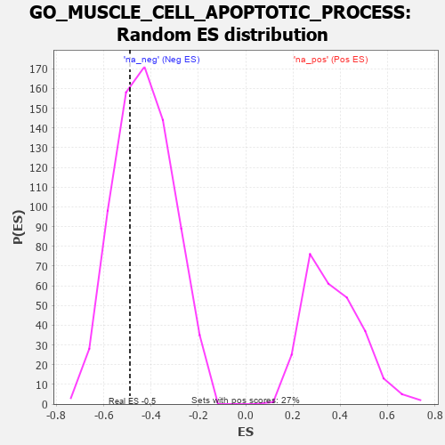

| | | Dataset | 7d |
| Phenotype | NoPhenotypeAvailable |
| Upregulated in class | na_neg |
| GeneSet | GO_MUSCLE_CELL_APOPTOTIC_PROCESS |
| Enrichment Score (ES) | -0.4894555 |
| Normalized Enrichment Score (NES) | -1.1376816 |
| Nominal p-value | 0.3305785 |
| FDR q-value | 0.713574 |
| FWER p-Value | 1.0 |
Table: GSEA Results Summary
 Fig 1: Enrichment plot: GO_MUSCLE_CELL_APOPTOTIC_PROCESS
Fig 1: Enrichment plot: GO_MUSCLE_CELL_APOPTOTIC_PROCESS
Profile of the Running ES Score & Positions of GeneSet Members on the Rank Ordered List
| PROBE | GENE SYMBOL | GENE_TITLE | RANK IN GENE LIST | RANK METRIC SCORE | RUNNING ES | CORE ENRICHMENT | | 1 | PDCD4 | | | 941 | 0.497 | -0.0530 | No |
| 2 | RBM10 | | | 1430 | 0.404 | -0.0613 | No |
| 3 | GATA4 | | | 1837 | 0.330 | -0.0689 | No |
| 4 | BMP7 | | | 2107 | 0.290 | -0.0647 | No |
| 5 | BAG3 | | | 2620 | 0.209 | -0.1016 | No |
| 6 | TIGAR | | | 3091 | 0.138 | -0.1425 | No |
| 7 | HSF1 | | | 3718 | 0.039 | -0.2162 | No |
| 8 | SFRP2 | | | 4065 | -0.018 | -0.2572 | No |
| 9 | ILK | | | 4510 | -0.096 | -0.3004 | No |
| 10 | PDE1A | | | 4773 | -0.152 | -0.3134 | No |
| 11 | PDPK1 | | | 5043 | -0.207 | -0.3200 | No |
| 12 | PTEN | | | 5262 | -0.261 | -0.3132 | No |
| 13 | STK4 | | | 6145 | -0.518 | -0.3560 | Yes |
| 14 | MFN2 | | | 7208 | -1.081 | -0.3476 | Yes |
| 15 | ARRB1 | | | 7935 | -3.377 | 0.0045 | Yes |
Table: GSEA details [plain text format]

Fig 2: GO_MUSCLE_CELL_APOPTOTIC_PROCESS: Random ES distribution
Gene set null distribution of ES for GO_MUSCLE_CELL_APOPTOTIC_PROCESS